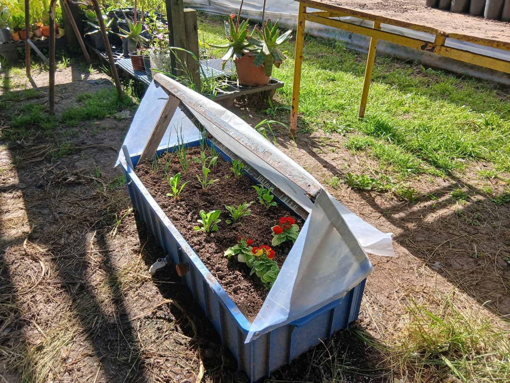
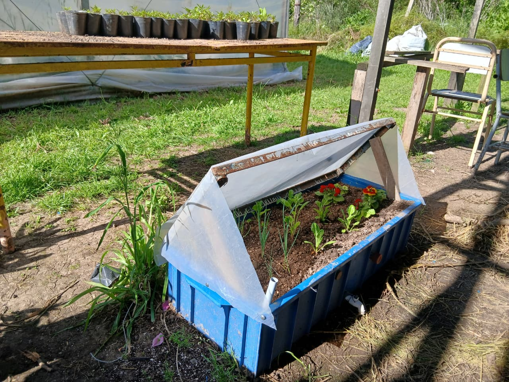
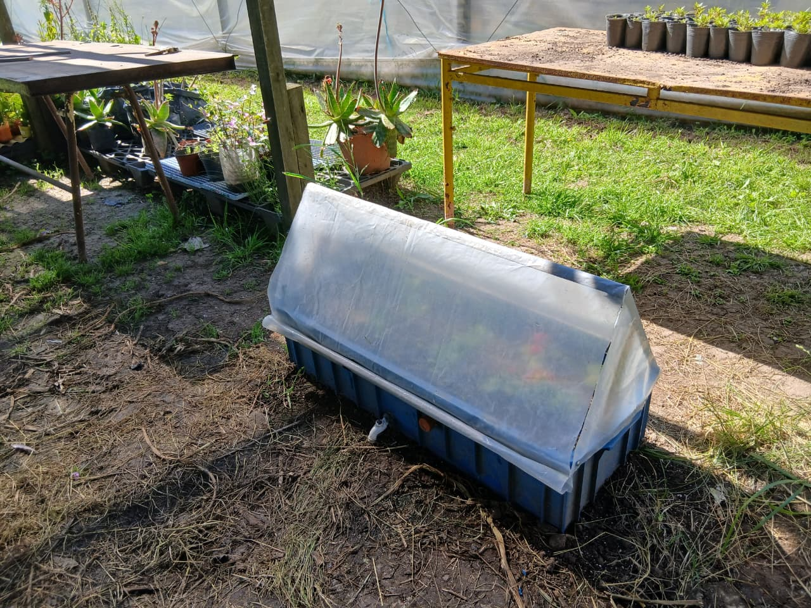
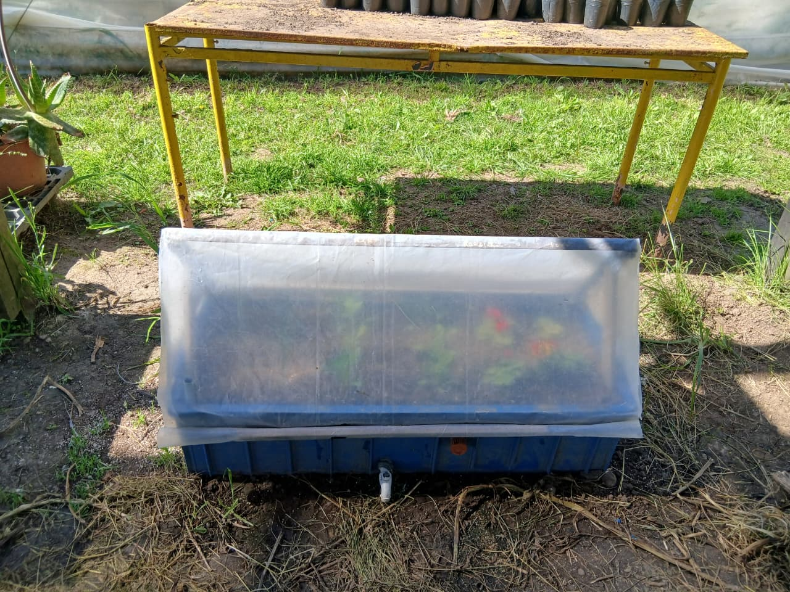

Wicking Bed transportable





- Presupuesto
- $40.000
- Materiales
- $32.500
- Mano de obra
- $19.500
DESCRIPCIÓN: La base de ésta Wicking es un cajón azul de plástico de 95cm x 35cm y 20cm de profundidad.
PARTE SUPERIOR: Zona cultivable, se encuentra el sustrato.
PARTE MEDIA: La maya divisoria es una media sombra negra. En la parte exterior tiene una canilla de plástico de nivelación ( mientras se está cargando el tanque de agua, se deja esta canilla abierta, cuando empieza a chorrear quiere decir que debes dejar de regar, demarca un límite), su uso es opcional porque este diseño también cuenta con un tubo transparente que muestra a qué nivel se encuentra el agua.
PARTE INFERIOR: La cañería está dispuesta por 4 filas de tubos PVC de ¼ 1 pulgada conectados entre sí, el tubo de la primera fila sale hasta la superficie de la parte superior de la wicking, y funciona como tubo de carga. En el exterior del cajón hay una canilla inferior, de plástico, que permite el desagüe la Wicking.